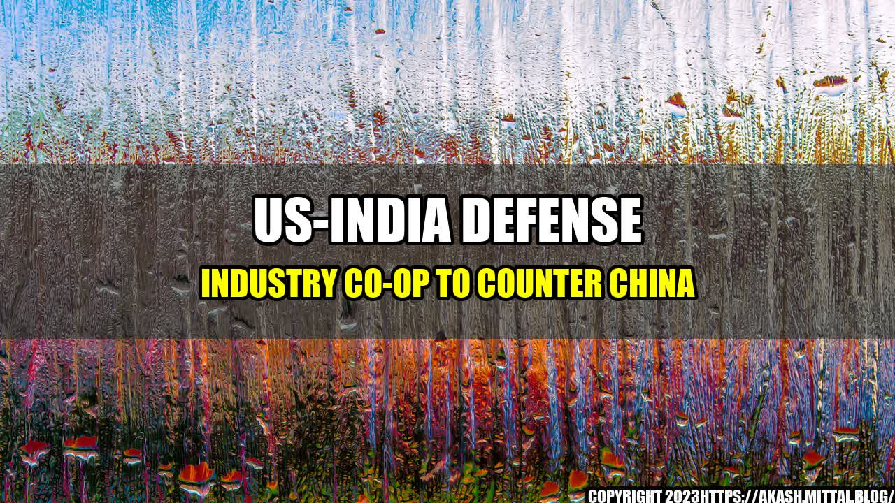

US-India Defense Industry Co-op to Counter China
How the Two Countries Aim to Boost their Defense Industry Through Co-operation Against the Rise of China's Military Might
The Need for Co-operation
The growing military might of China has become a concern for many countries in the region, including India and the United States. In fact, the two countries have seen this as an opportunity to strengthen their defense industry co-operation in order to counter China's growing influence and aggression.
Co-operation between the two countries is not new, particularly in the field of defense. However, the recent US-India Defense Technology and Trade Initiative (DTTI) and the Joint Strategic Vision for the Asia-Pacific and the Indian Ocean Region signed in 2015 aim to take this co-operation to a new level.
The Plan to Prop Up the Defense Industry
The US-India defense industry co-operation plan has several components, including the following:
- Joint Research and Development Initiatives: The two countries will collaborate on research and development in various areas, including defense-related technology such as unmanned vehicles and missile technology.
- Technology Transfer and Co-Production: The aim is to co-produce and transfer technology, including critical defense equipment and systems, to India. This will help India build its own defense industry and reduce dependency on foreign imports.
- Defense Trade and Procurement: The two countries will explore opportunities to increase trade in defense-related products and services. This could include procurement of defense equipment and systems, and technical services such as training.
Through these measures, the aim is to not only strengthen the defense capabilities of the two countries but also boost their domestic defense industries.
Examples of Co-operation
There have already been several examples of US-India defense industry co-operation:
- C-17 Globemaster III Program: India signed a deal with the US to buy 10 Boeing C-17 Globemaster III military transport aircraft in 2011. As part of the deal, India received technology transfers and the right to manufacture its own parts for the aircraft.
- Joint Research on Jet Engine Technology: India and the United States signed a memorandum of understanding to jointly develop and manufacture jet engine components in 2016. The aim is to develop a next-generation fighter aircraft engine.
- Naval Co-operation: The US and India have been increasing their naval co-operation in recent years, including joint exercises and port visits. This has included sharing of submarine technology and information.
These examples show how US-India defense industry co-operation is already having an impact and is helping India build up its own defense capabilities.
The Benefits of Co-operation
There are several benefits to US-India defense industry co-operation:
- Increased security: Co-operation between the two countries will lead to stronger defense capabilities, which will in turn increase security for both nations in the face of China's growing military might.
- Boost to domestic defense industries: Through technology transfer and co-production, India will be able to boost its domestic defense industry, which will lead to job creation and economic growth.
- Diplomatic benefits: Closer co-operation between India and the United States will have diplomatic benefits, particularly in terms of counterbalancing China's influence in the region.
The US-India defense industry co-operation plan is one of several measures being taken by countries in the region to counter China's growing military might. It remains to be seen whether these measures will be successful in the long run, but the increased co-operation between India and the United States is certainly a step in the right direction.
Curated by Team Akash.Mittal.Blog
Share on Twitter Share on LinkedIn